Юбилейные мероприятия, посвященные 50-летию кафедры
«Прикладная
математика» –
«Прикладная математика и информационные
технологии»
О мероприятиях
В 2025 году отмечается 50-летний Юбилей кафедры «Прикладная математика» – «Прикладная математика и информационные технологии» (ПМ – ПМиИТ).
По этому случаю была подготовлена юбилейная статья, посвящённая истории создания и развития кафедры.
Читать статью «Полувековой юбилей специальности ПМ»
Кафедра была создана с целью популяризации преподавания математики и информатики как основы высшего профессионального инженерного образования, повышения престижа научных исследований на основе математического моделирования и информационных технологий, а также обмена знаниями и передовым опытом в области прикладной математики, информационных технологий, вычислительной механики и моделирования технических и социально-экономических систем.
Приказ о подготовке и проведении мероприятий, посвященных 50-летию кафедры ПМ-ПМиИТ, утвержден прикзом № 574 ректора ИжГТУ А.В. Губерта от 16.05.2025
Приказ о подготовке и проведении мероприятий, посвященных 50-летию кафедры ПМ-ПМиИТ
История кафедры
1975: Основание кафедры
В 1975 году на основании Приказа Министерства высшего и среднего специального образования РСФСР за №316 от 12.06.1975 ректором Ижевского механического института А.М. Липановым издан Приказ №1127 от 31.12.1975 о создании на приборостроительном факультете профилирующей кафедры прикладной математики (ПМ) для подготовки инженеров-математиков. Исполняющим обязанности заведующего кафедрой прикладной математики назначен к.т.н., доцент кафедры вычислительной техники Калядин Николай Иванович.
1989: Создание кафедры ММПТ
Приказом ректора ИжГТУ И.В. Абрамова №14 от 15.09.1989 с целью повышения роли математического образования на Машиностроительном факультете ИжГТУ была создана кафедра «Математическое моделирование процессов и технологий» (ММПТ), заведование которой принял д.т.н., профессор Русяк Иван Григорьевич.
1993: Переименование
В 1993 году кафедра ПМ переименована в кафедру «Прикладная математика и информатика» (ПМИ).
2020: Объединение кафедр
Приказом ректора В.П. Грахова № 835 от 03.09.2020 г. с целью повышения качества подготовки кадров была образована кафедра «Прикладная математика и информационные технологии» (ПМиИТ) на основе объединения кафедр «ПМИ» и «МОИС». Заведующим объединенной кафедры ПМиИТ был назначен д.т.н., профессор Русяк Иван Григорьевич.
К юбилею были подготовлены галереи преподавателей и заведующих кафедры ПМ-ПМиИТ
Программа развития кафедры
Программа развития кафедры «Прикладная математика и информационные технологии» (ПМиИТ) на период 2025 – 2030 гг.
Программа развития кафедры ПМиИТ основывается на предположениях о востре-бованности:
• специалистов в области прикладной математики для решения задач импортозамещения программного обеспечения;
• специалистов в области искусственного интеллекта и информационных технологий в связи с расширением областей их применения.
На заседании кафедры был принят план мероприятий по повышению эффективности деятельности кафедры в части оказания услуг и выполнения работ:
Фото-Галерея
50 лет кафедре ПМ-ПМиИТ: история в фотографиях
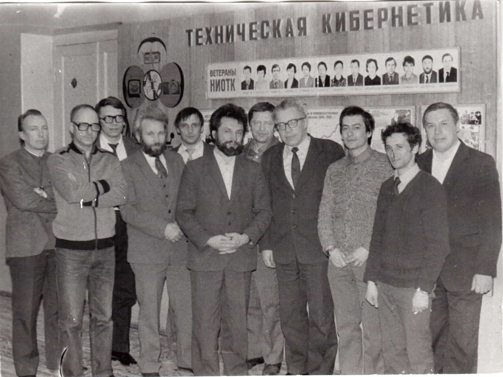
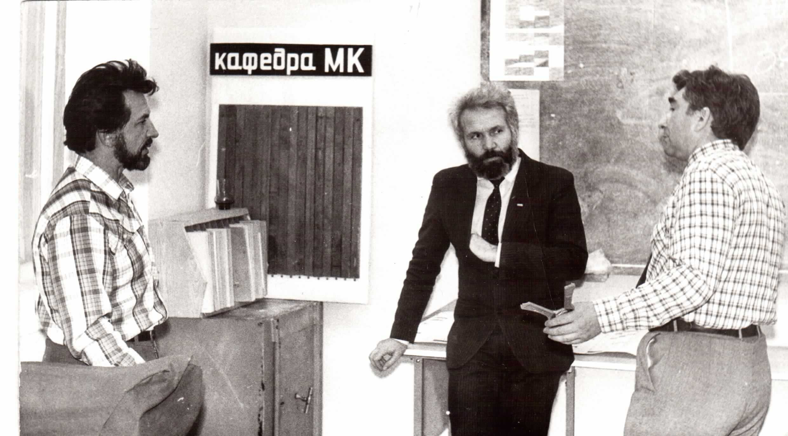
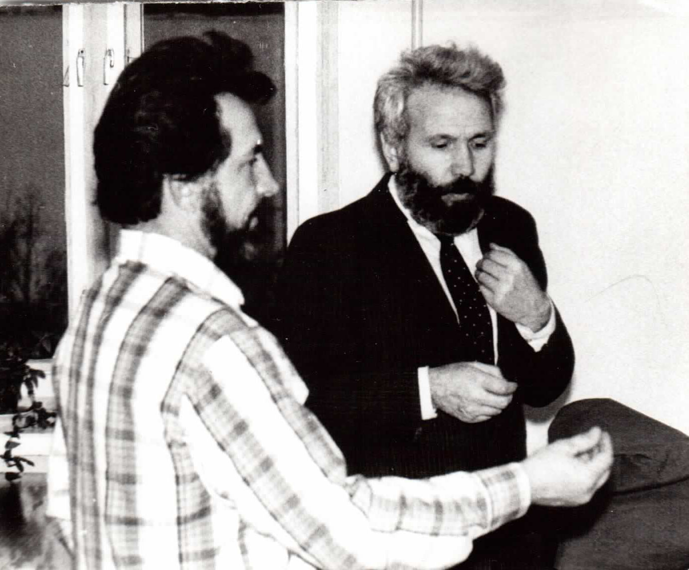

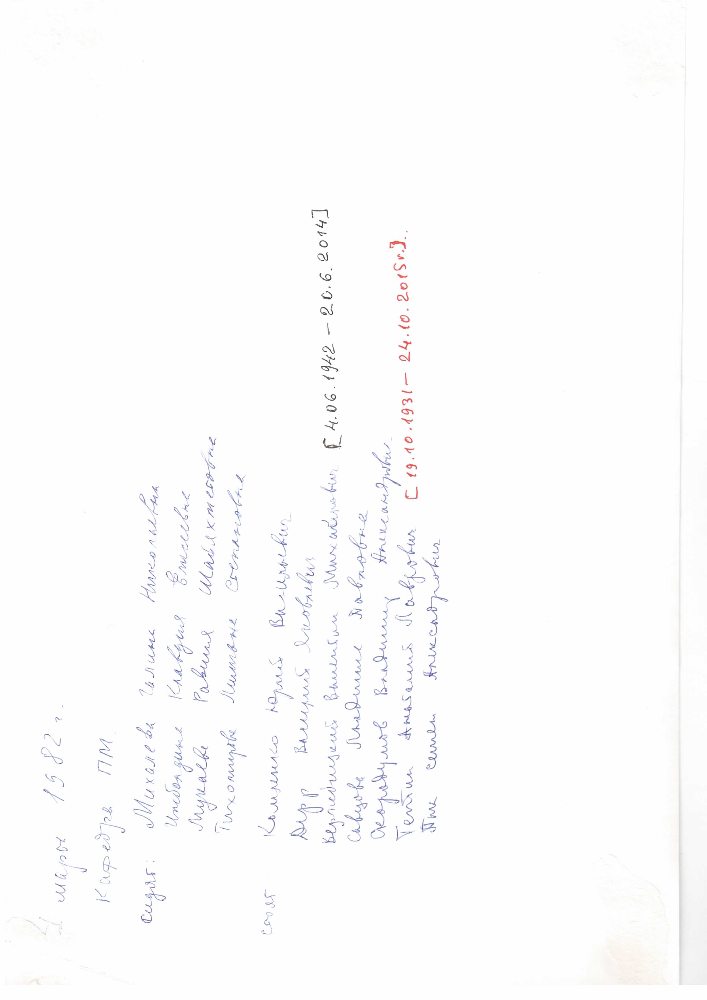

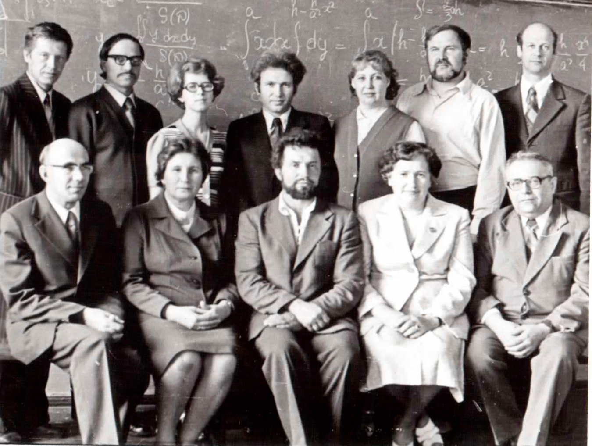


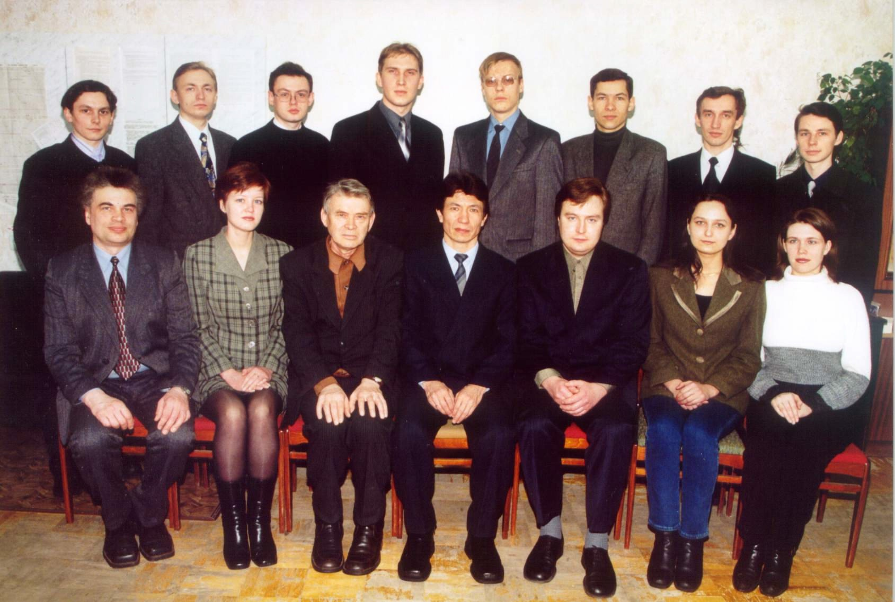
Достижения кафедры
На кафедре «Прикладная математика и информационные технологии» в 1996 году была создана научная школа «Математическое моделирование технических и социально-экономических систем» , которая является Ведущей научной школой ИжГТУ имени М.Т. Калашникова. Основателем научной школы и ее научным руководителем является академик РАН и РАРАН, доктор технических наук, профессор Липанов Алексей Матвеевич , руководителями научной школы являются академик РАРАН, доктор технических наук, профессор Русяк Иван Григорьевич и доктор физико-математических наук, профессор Тененев Валентин Алексеевич
Тематика исследований в рамках научной школы:
•динамика, баллистика, управление движением летательных аппаратов;
•моделирование полигонных испытаний, визуальные технологии виртуальной реальности;
•цифровые модели объектов, систем и процессов (цифровые двойники);
•численное решение пространственных нестационарных сопряженных задач гидродинамики и тепломассообмена;
•математическое компьютерное моделирование работы газодинамических устройств;
•машинное обучение и интеллектуальные методы обработки данных;
•математическое компьютерное моделирование социально-экономических систем.
В рамках научной школы преподавателями и сотрудниками кафедры получен целый ряд фундаментальных и прикладных результатов, которые отражены в многочисленных публикациях и в отчетах по Грантам и хоздоговорным научно-исследовательским работам.
Выдающиеся ученые, труды которых внесли существенный вклад в становление и развитие кафедры «Прикладная математика и информационные технологии», ее образовательного и научного потенциала представлены в Галерее Ученых.
За время существования кафедры в рамках научной школы были защищены 6 докторских диссертаций и 39 кандидатских диссертаций. Выпускники кафедры, защитившие докторские диссертации представлены в Галерее Докторов наук кафедры . Выпускники кафедры, защитившие кандидатские диссертации представлены в Галерее Кандидатов наук кафедры.
Основные проекты, выполненные в рамках научной школы
Контактная информация
Кафедра ПМиИТ:
Русяк Иван Григорьевич, зав. каф. «ПМиИТ»
тел. 8 (3412) 77-60-55, доб. 6298
e-mail: mmpt@istu.ru
Отзывы выпускников
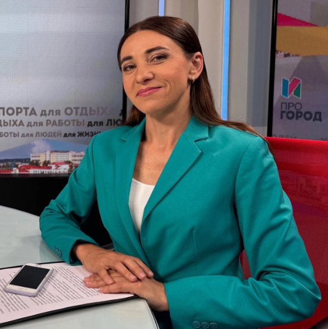
Альфия Варнавьева
Специалитет – 2005 год выпуска
Сейчас я работаю не по специальности. Но обучение на факультете «Прикладная математика» было очень полезным – самый важный навык, который я приобрела – это находить решение любых задач. Когда я училась, интернет не был доступен всем. Для Курсовых я искала информацию в библиотеках. Перебирала много книг, чтобы понять, разобраться, найти ответы. И всегда их находила. Программирование - отдельный вид «искусства». Пока не попробуешь массу вариантов – лабораторную не сделаешь. Мне было не просто учиться. Но я горжусь, что окончила один из сложных факультетов в ИжГТУ.
Телеведущая, канал «Моя Удмуртия», г. Ижевск
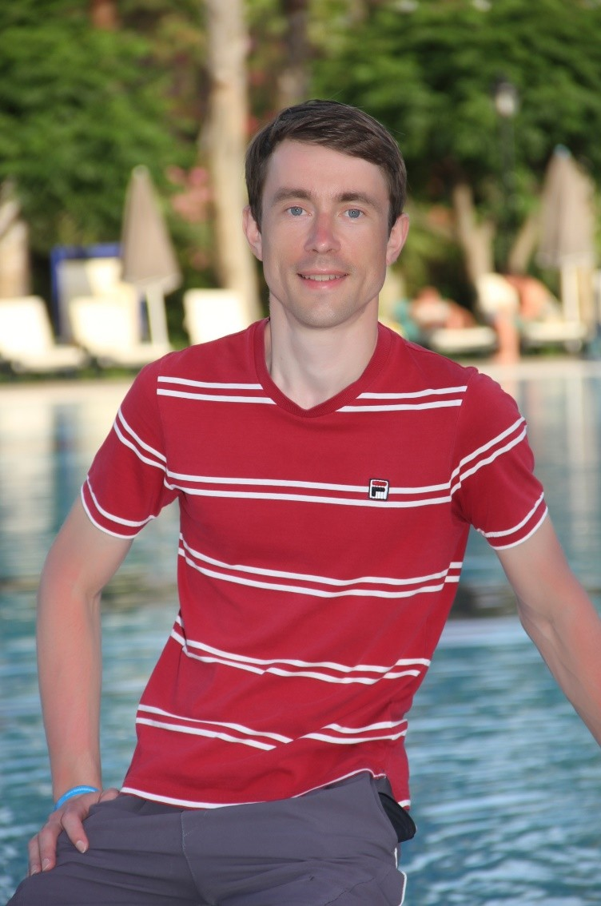
Сергей Дмитриев
Специалитет – 2005 год выпуска
На кафедре я научился многому, также как и во время написания кандидатской диссертации. Её я защитил в 2007 году. Сейчас я работаю по специальности: создаю математические модели и внедряю их в работу компании. Могу сказать, что ученая степень мне пригодилась, вернее не сам факт её наличия, а в целом подходы, используемые при подготовке диссертации. Они применимы и для прикладных бизнес-задач.
Главный специалист по машинному обучению, ПАО «Ак Барс Банк», г. Казань
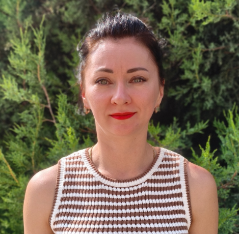
Татьяна Дадашьянц (Наумова)
Специалитет – 2005 год выпуска
После окончания специальности «Прикладная математика» я преподавала «Теорию вероятностей и математическую статистику» в ИжГТУ имени М.Т. Калашникова. Сейчас живу в солнечной Анапе. Уже в Краснодарском крае получила второе высшее по специальности «Бухгалтерский учёт, анализ, аудит» и занимаюсь строительным бизнесом. С огромной теплотой вспоминаю годы учебы на любимом факультете, возглавляемом И.Г. Русяком. Меня там научили учиться, быстро усваивать необходимую информацию и применять её в деле. Поздравляю родную кафедру с 50-тилетием!
Специалист строительной отрасли, г. Анапа, Краснодарский край
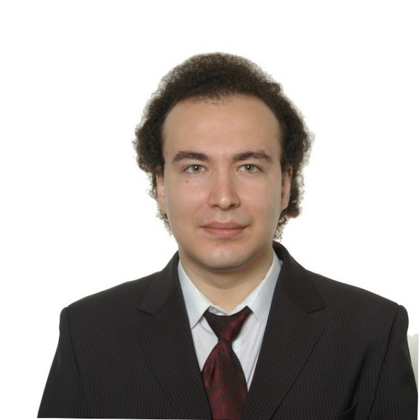
Артем Семакин
Специалитет – 2006 год выпуска
Можно сказать, что всю свою жизнь я работаю по специальности, полученной на кафедре ПМиИТ. В итоге для меня оказались нужными все предметы математического и компьютерного блока. В начале 2000-х годов мы изучали в качестве языка программирования Pascal, лучше было бы изучать С++.
Доцент кафедры ФН-1 «Высшая математика», МГТУ им. Н.Э. Баумана, г. Москва
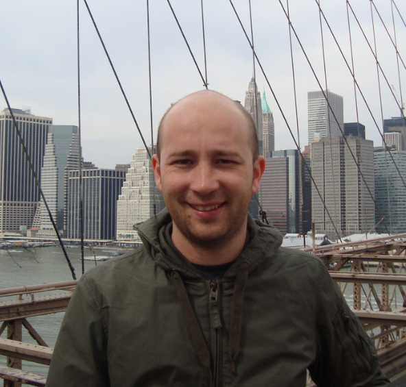
Иван Насыров
Специалитет – 2006 год выпуска
Прошло 19 лет с тех пор, как я окончил университет, но лекции, знания и поддержка от преподавателей кафедры до сих пор остаются для меня важнейшими воспоминаниями. Я хочу выразить вам глубокую благодарность за профессионализм, терпение, внимание и искреннюю заботу о студентах. Особое спасибо хочу выразить: 1. Ицкову Александру Григорьевичу - за наинтереснейшие лекции по теории вероятностей и статистике. 2. Дизендорфу Константину Игоревичу - за лекции по математическому моделированию. 3. Петрову Николаю Никандровичу - за интересные лекции по теории игр. 4. Айзиковичу Александру Аркадьевичу за фундаментальные знания и ценные жизненные уроки.
Ведущий аналитик продукта компании Broadridge Financial Solutions, г. Дублин, Ирландия
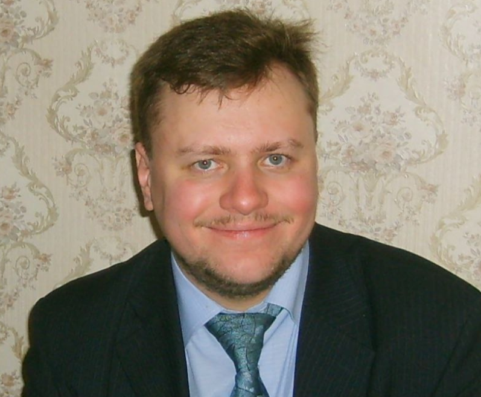
Дмитрий Спичкин
Специалитет – 2006 год выпуска
В период 2006-2015 годы работал ассистентом, старшим преподавателем кафедры ПМИ. Последние 10 лет работаю в смежной по специальности области. Пригождаются в работе не прямые знания, а привитые преподавателями и профессорами за годы обучения и работы на кафедре ПМИ привычки к глубокому обдумыванию и анализу задач, интеллектуальному трудолюбию, и выработанные в этот же период идеи системного подхода к решению задач и методологической проработки проблем.
Инженер-программист, АО «Ижевский опытно-механический завод», г. Ижевск
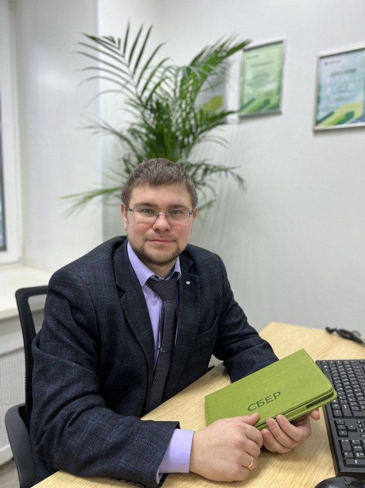
Алексей Агафонов
Специалитет – 2011 год выпуска
Больше года я работаю как индивидуальный предприниматель: удаленно предоставляю услуги по финансовому и управленческому учёту. Поэтому думаю, что работаю по специальности. Уже более 10 лет назад закончил обучение и могу сказать, что самое полезное в учебе на кафедре было – это способность к обучению, логика и выявление причинно-следственных связей. Также помогают сейчас знания программирования, поскольку работаю с большим объемом данных.
ТОП-менеджер внешней дистрибуции по Удмуртской Республике, ПАО «Сбербанк», индивидуальный предприниматель, г. Ижевск
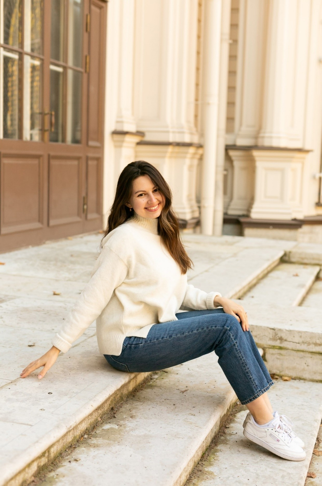
Анастасия Лагунова
Магистратура – 2014 год выпуска
Получив степень магистра, я успела поработать 2 года в должности бизнес-аналитика, затем 5 лет я работала аналитиком данных, строя интерактивные отчеты для топ-менеджмента одних из ведущих международных IT-компаний в Санкт-Петербурге. И еще 2 года я работала аналитиком данных в Нидерландах. Хочу сказать, что самое нужное и полезное из того, что я изучила на кафедре – это статистический анализ данных, теория вероятностей и эконометрика.
Аналитик данных, ООО «Business Intelligence», г. Санкт-Петербург
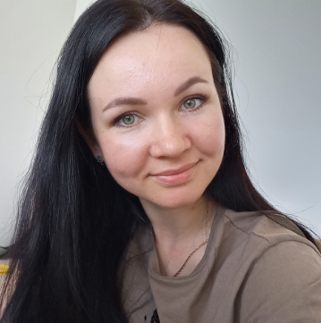
Елена Гараева
Магистратура – 2014 год выпуска
После окончания магистратуры я устроилась работать по специальности. И до сих пор продолжаю в том же духе! Тогда кафедра назвалась «Математическое обеспечение информационных систем». Учеба на кафедре дала мне базу – точность и аккуратность в расчетах, желание достичь максимального результата. Особенно запомнился предмет «Математическая статистика», именно он был рычагом в принятии решения о моей дальнейшей профессиональной деятельности.
Аналитик, компания BUNGLY, г. Ижевск
Ольга Бухарина
Бакалавриат – 2016 год выпуска
Несколько лет я работаю в IT-компании Cloud.ru (ООО «Облачные технологии») в подразделении, связанном с направлением автоматизации учета клиентских данных. Моя должность – Администратор CRM, я анализирую информацию по клиентам – от контактов до истории покупок. Со времени обучения на кафедре у Ивана Григорьевича Русяка в работе мне пригодились знания информационных технологий и бизнес-администрирования. Считаю, что работаю по специальности.
Администратор CRM, ООО «Облачные технологии» Cloud.ru, г. Ижевск
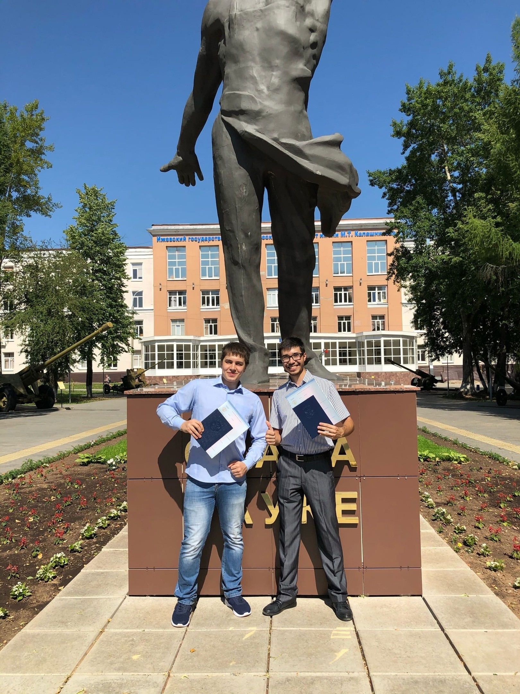
Кирилл Романенко
Бакалавриат – 2020 год выпуска
На кафедре я получил полезные для себя навыки основ программирования, хотя хотелось бы, чтобы учили правильно писать код. Также я приобрёл навыки анализа задач, разработки решений и решения возникающих проблем по ходу решения. Мне нравится, что мне проще понять сложность алгоритма чем другим, но этот навык применяется редко.
Разработчик систем информационной безопасности, ООО «Ламода Тех», г. Ижевск
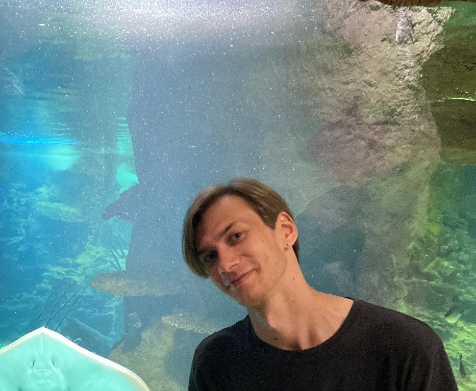
Банников Макар Вадимович
Бакалавриат – 2020 год выпуска
Спустя годы детали лекций стёрлись, и большинство формул не используется в работе. Одно могу сказать точно, кафедра привила культуру анализа, которая останется навсегда! За это я благодарен преподавателям кафедры «Прикладная математика и информационные технологии».
Старший разработчик, ООО «ДжейТи Консалтинг», г. Ижевск
Асабина Александра Григорьевна
Бакалавриат – 2020 год выпуска
Спустя 5 лет после выпуска, я с уверенностью могу сказать, что знания и навыки, полученные на кафедре прикладной математики, остаются для меня актуальными и востребованными. Даже если некоторые дисциплины не были связаны напрямую с моей текущей профессиональной деятельностью, они продолжают помогать в решении различных задач.
Инженер-разработчик, ОК «Русал», г. Ижевск
Ларин Всеволод Олегович
Бакалавриат – 2020 год выпуска
На кафедре работают профессионалы своего дела, такие люди мотивируют работать и саморазвиваться. Я рад, что закончил кафедру «Прикладная математика и информационные технологии». Я востребован и работаю по специальности.
Системный аналитик, Корус Консалтинг, г. Ижевск
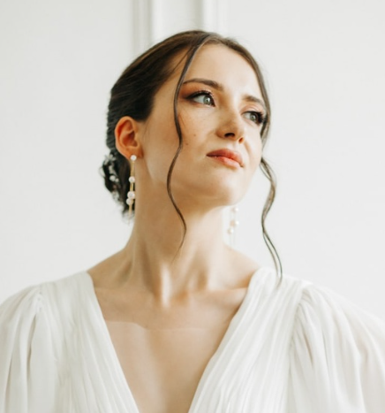
Яна Третьякова
Магистратура – 2021 год выпуска
Могу сказать точно, что знания после учёбы на кафедре пригодились 100%: от работы в различных программах, которые изучали, до правильного и красивого оформления презентаций и отчетов.
Руководитель направления проектов, Ижевский механический завод, г. Ижевск
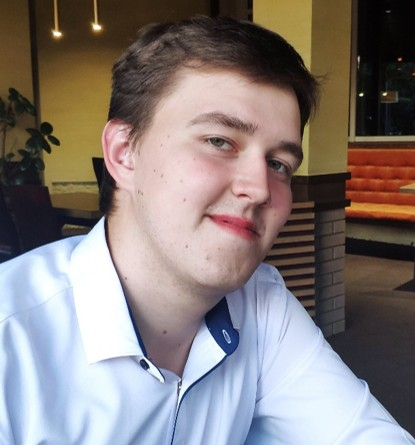
Тимур Насридинов
Магистратура – 2021 год выпуска
Обучение на кафедре помогло мне развить не только технические навыки, но и критическое мышление. Практические занятия по программированию и машинному обучению стали отправной точкой моей карьеры.
System Engineer (системный инженер), Международная компания G-core, г. Люксембург
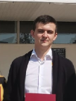
Роман Седов
Магистратура – 2021 год выпуска
Я закончил бакалавриат кафедры прикладной математики и информатики, а затем продолжил обучение в магистратуре на кафедре прикладной математики и информационных технологий. Уже на бакалавриате я отлично овладел навыками разработки программного обеспечения. В магистратуре я больше получил знаний и навыков, связанных с публичными выступлениями, часто принимал участие в конференциях, занимался научной деятельностью.
Ведущий разработчик, Университет Иннополис, г. Казань
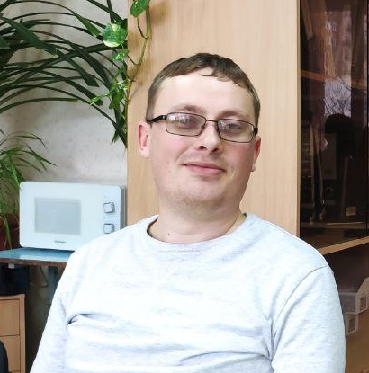
Руслан Дряхлов
Магистратура – 2021 год выпуска
Во время обучения по направлению «Прикладная математика» мы изучали фундаментальные законы математики и физики, принципы построения сложных математических моделей, эконометрическое моделирование, современные языки программирования. Были сложные лабораторные и практические работы. Сейчас я работаю в основном с табличными процессорами и аналитическими данными.
Маркетолог-аналитик, ООО «Фармакон», г. Ижевск
Хамидуллин Рифкат Равилевич
Магистратура – 2022 год выпуска
Кафедра дала глубокую математическую базу и ценные прикладные навыки, что стало отличным фундаментом для карьеры.
Программист, Directum, г. Ижевск
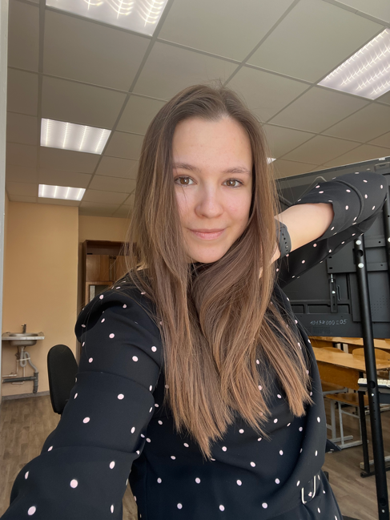
Ильина Анна Викторовна
Магистратура – 2022 год выпуска
Хочу выразить огромную благодарность всем преподавателям кафедры за интересную и насыщенную учебу. Я получила не только новые знания, но и отличный опыт, который пригодился мне в будущем.
Мастер производственного обучения, АПОУ УР «ТРИТ им. А. В. Воскресенского», г. Ижевск